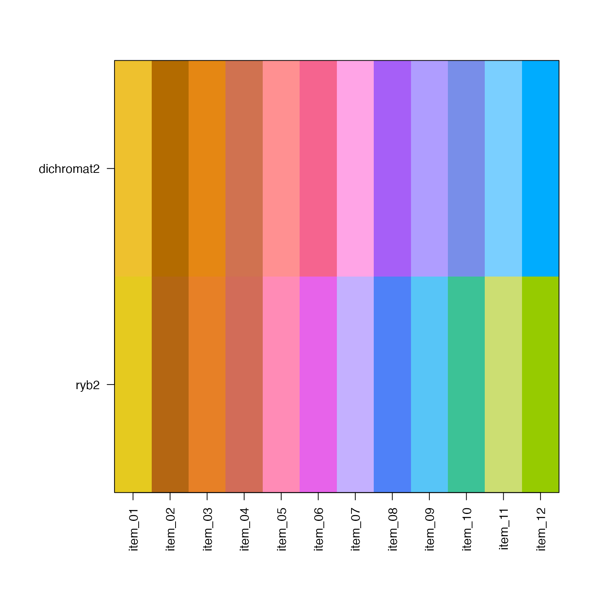
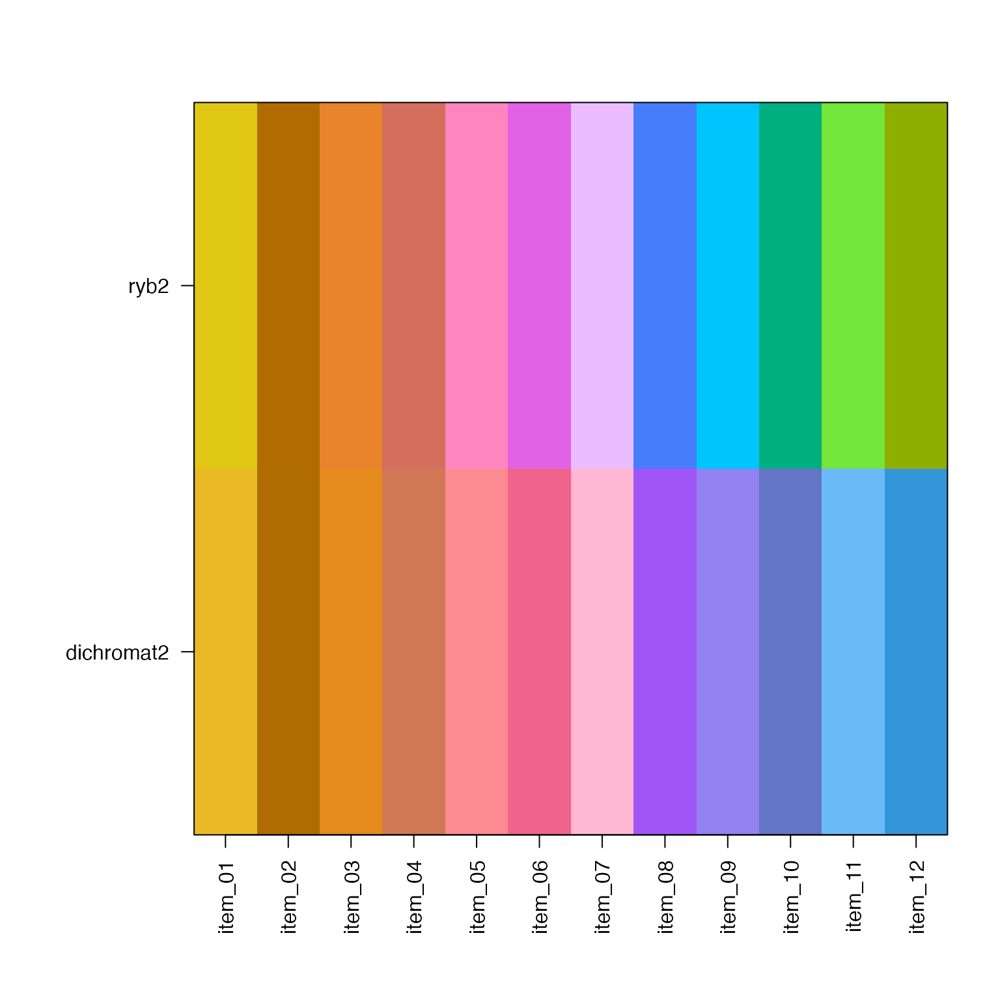
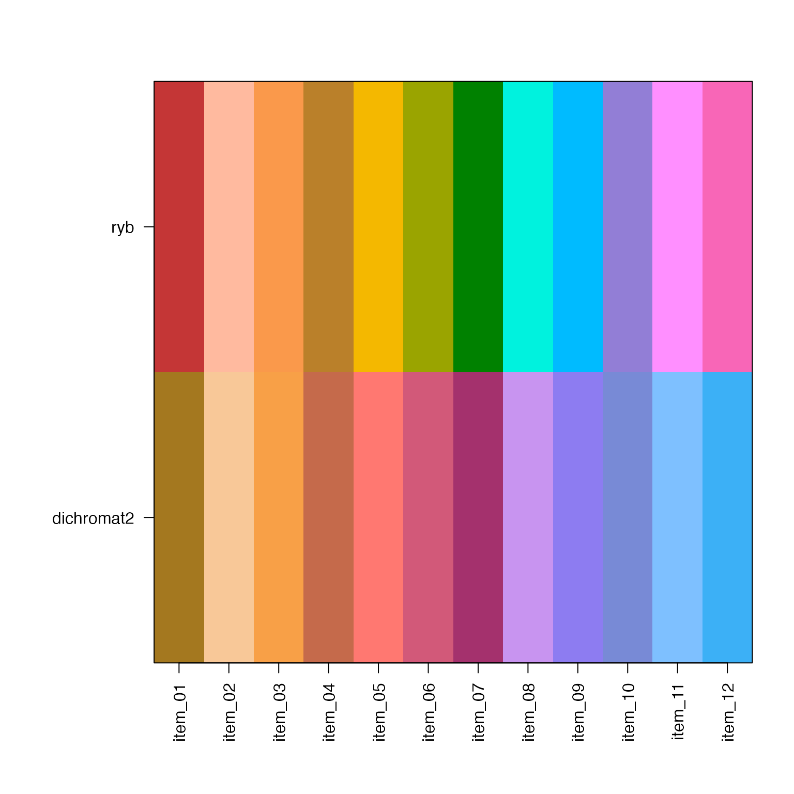
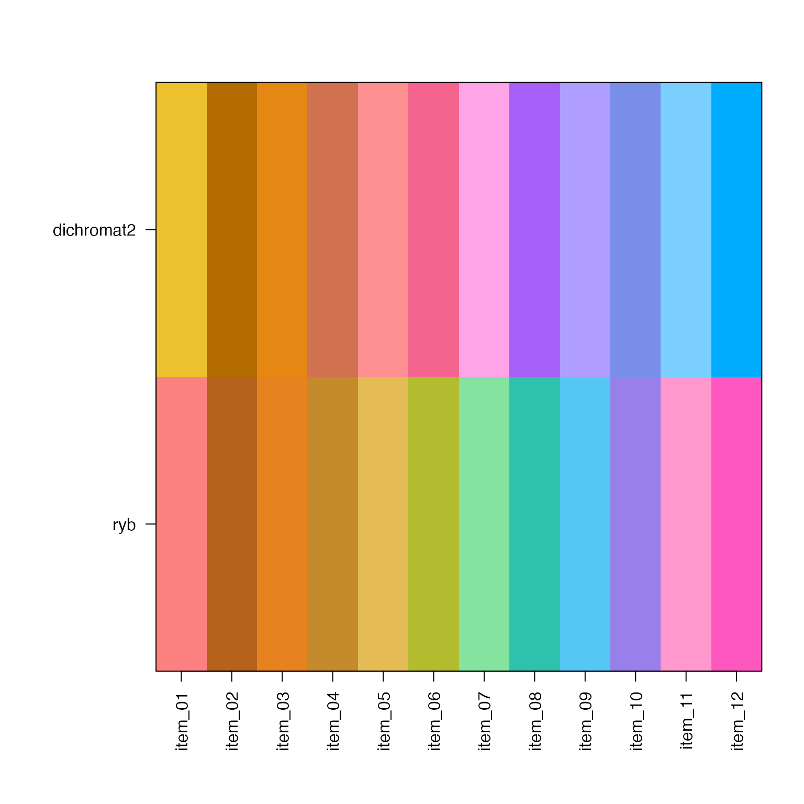
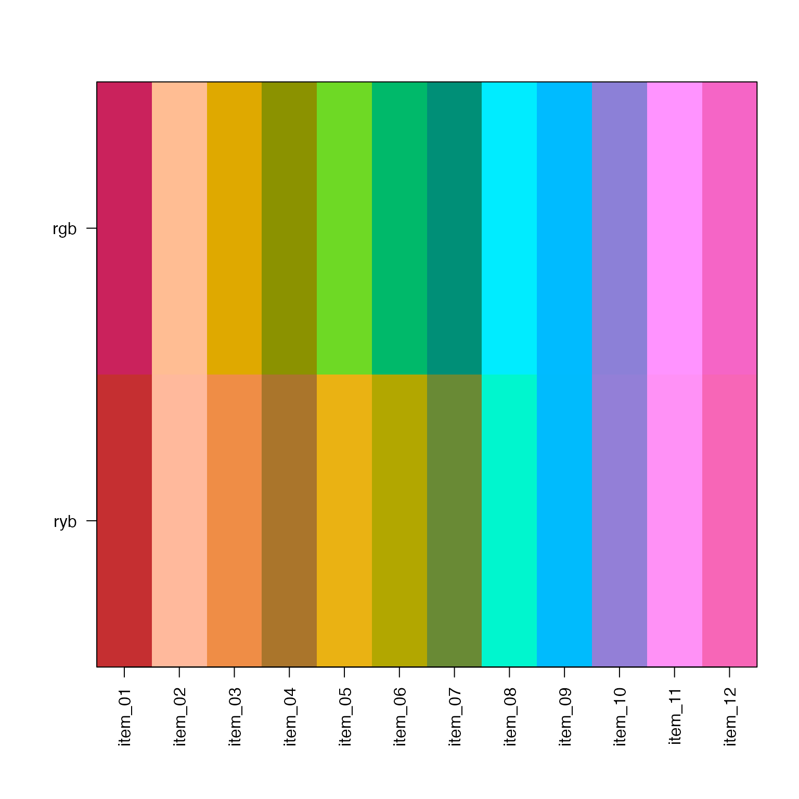

Remap colors to a new colorjam preset, using existing preset when available.
Usage
remap_colorjam_preset(
x,
preset = NULL,
preset_from = NULL,
do_plot = FALSE,
plot_debug = FALSE,
...
)Details
This function is experimental, and is intended to convert a set
of categorical colors to a colorjam preset. When the existing
colors have attribute "preset" it is used to inform the starting
preset. The output of rainbowJam() includes the preset as
attr(x, "preset").
The HCL and HSL color conversions are blended together to improve the imperfect result from either method alone. The end result is imperfect, but better than the alternatives.
See also
Other colorjam hue warp:
add_colorjam_preset(),
add_colorjam_step(),
adjust_hue_warp(),
approx_degrees(),
colorjam_presets(),
colorjam_steps(),
display_degrees(),
h2hw(),
h2hwOptions(),
hcl_to_hsl_hue(),
hsl_to_hcl_hue(),
hw2h(),
mean_angle(),
plot_colorjam_preset(),
validate_colorjam_preset()
Examples
x <- rainbowJam(12)
x_new <- remap_colorjam_preset(x, preset="ryb2", do_plot=TRUE)

x <- rainbowJam(12, preset="ryb2")
x_new <- remap_colorjam_preset(x, preset="dichromat2", do_plot=TRUE)

x <- rainbowJam(12, preset="ryb")
x_new <- remap_colorjam_preset(x, preset="dichromat2", do_plot=TRUE)

x <- rainbowJam(12, preset="dichromat2")
x_new <- remap_colorjam_preset(x, preset="ryb", do_plot=TRUE)

x <- rainbowJam(12, preset="rgb")
x_new <- remap_colorjam_preset(x, preset="ryb", do_plot=TRUE)
